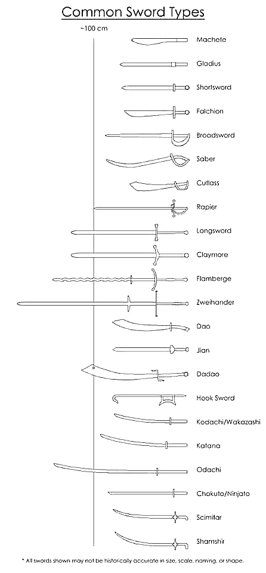

Confused what the different types of swords are?

Machete and Falchion
The machete is exactly a sword, more of a tool to cut a path through jungles. It has evolved from the european falchion. Both have a rather short blade and only one edge. Is rather bulky to add momentum to the swing to cut through thicker vines.
Gladius and Shortsword
Gladius is the Roman sword, carried by all legionaries. The shortsword is the evolution of a gladius, but carries the same characteristics. Both have straight edges and a point, useful in close combat between many people.
Broadsword
A longer version of a gladius, this weapon was the most common throughout history. A medium-long straight blade with two edges and a moderatly sharp point, this weapon was used more for slicing than stabbing. Most foot soldiers carried these for many centuries.
Saber and Cutlass
The saber was an eastern addition to the European battlefield, most mounted warriors preferring a single edge and a stronger blade back to fight. It is generally thicker than a broadsword, needing to support stronger blows. Most sabers had a sharp point for stabbing purposes.
The cutlass could be categorised as a mutated saber, also being single edged. However, it was wider and thinner than its cousin, and was thus preferred for naval battles by pirates.
Longsword and Claymore
As funny as it seems, the longsword is indeed a long sword, a longer version of the broadsword, while the claymore is the longsword's Scottish cousin. Since it is longer, it had to be made thinner, otherwise most soldiers would not be able to swing it efficiently. Having two edges, it did not have a sharp point due to the weight of the sword. It was generally wielded with two hands, rather than one, thus making the bearer more vunerable.
Flamberge and Zweihander
Zweihander means two handed in german, so naturally it was swung with both hands. Both weapons were very large and very heavu, meaning only the strongest warriors could use them for hours in battle. They did not have a sharp point, and the edges were not very sharp, as the swing of the blade was fatal regardless of the edge sharpness. However, due to its weight, the wielders could not battle for a long time, so it was rarely seen.
Dao and Dadao
The Dadao is a two handed version of the Dao, a Chinese single edged sword, similar to the European cutlass. It is very difficult to say which came first, but one has influenced the other.
Katana and Wakizashi
These samurai swords are well known throughout the world. Always coming in a set, they were the main weapons of Japanese warriors. Single edged and bearing a slight curve, they are similar looking to the sabers of Europe, but the making peocess for them was very different to the one used by European smiths.
Jian and Ninjato
Both of these swords are similarly straight, but posess a single cutting edge, as well as a sharp point. However, while the Chinese jian was a noble sword, the Japanese ninjato was favoured by ninjas for stealth missions.
Nodachi / Odachi
A nodachi is to a katana, as a dadao is to dao. It is a large katana, weilded with two hands only and never was considered part of a set. Was not common on the battlefield for the same reasons as a flamberge.
Hook sword and Sword Breaker
Initially part of the Chinese armoury, this weapon has several cousins that perform similar functions, like the sword breaker. Having several sharpened edges from the hooks to the sharp pommel, these kinds of weapons were used to trap opponents, sometimes even disarming them.
Shamshir and Scimitar
The Middle Eastern version of a saber, it has a well defined curve and a single cutting edge that forms a sharp point at the end. The main difference from a saber is the bend. It is much more pronounced and makes the blade look much longer than it actually is.